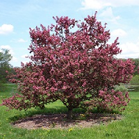

Ritkán tövises, lombhullató kis fák vagy cserjék. Leveleik egyszerűek, karéjosak, néha hasadtak. Virágzata csomó, bogernyő vagy sátorozó fürt. Virágaik fehér, rózsaszín vagy piros színűek. Párta 5, csésze 5 van, porzóinak száma 15, 20 vagy 50, a 2-5 bibeszál alul összenőtt.
Egy virágzó almafa
Az almafa termése botanikailag csoportos tüszőtermés, alma áltermés (pomum): gömbölyded alakú, két végén bemélyedés található. A felső mélyedésből ered a rövid kocsány, ezzel csüng a fán. A másik mélyedésben az öt apró, elszáradt csészelevél. Az alma viaszos héja a gyümölcshúst veszi körül. Ezen belül öt hártyás rekeszben ülnek a magvak.
Az európai almatermés évente 16 millió tonna körül alakul, amelyből 4 millió tonna Lengyelországban terem. Magyarországon 2018-ban 700-750 000 tonna alma teremhet, amely az átlagosnál 20-30 százalékkal több.
| Ország | Mennyiség (ezer t) |
|---|---|
| Ausztria | 185 |
| Csehország | 105 |
| Hollandia | 227 |
| Magyarország | 460 |
| Németország | 597 |
| Európai Unió | 10 106 |